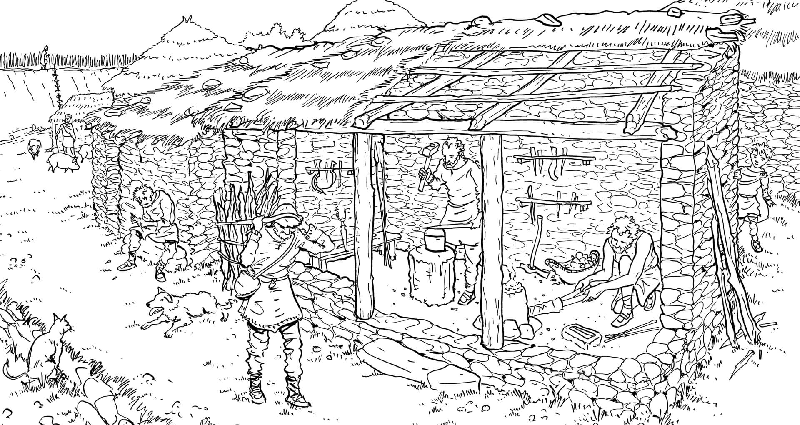

Las
complejas defensas de los castros, junto con las armas y las esculturas
de jefes guerreros aparecidas nos corroboran una competencia violenta
entre estas pueblos. No obstante, esta violencia seguramente se
manifestaba más en actos de pillaje y guerrilla entre comunidades de
castros que en guerras propiamente dichas.
Al inicio de la Edad del Hierro (s. IX a. C.) los castros se situaban
en zonas elevadas que podían ser defendibles de manera natural sin
grandes construcciones artificiales, pero su emplazamiento se va
cambiando a zonas menos prominentes. Los castros construidos a partir
del siglo V. a. C están más cerca de las tierras bajas y los valles,
dando más importancia al control de las zonas de cultivo. Es a partir
de este momento cuando se produce un aumento de la complejidad
defensiva puesto que ya no disponen de las anteriores defensas
naturales.
Esta complejidad se puede ver en Borneiro, sobre todo en la parte este
donde aparecen dos entradas monumentales unidas por un camino. Una de
ellas, la de la croa, presenta un cuerpo de guardia cuya excavación
reveló un proceso reconstrucción y reforma continuo.

Recreación de la puerta y el cuerpo de
guardia
La croa de Borneiro, de planta ovalada, está protegida por una muralla
de doble lienzo y un foso. Estas murallas podrían tener una empalizada
de madera y una altura en algunos lugares de más de 5 metros. Paralela
a la primera, hay una segunda línea de muralla que se ensancha en la
zona del barrio de extramuros. Pocos metros más allá de esta segunda
muralla aparecen los restos de una tercera. El antecastro también
presenta una muralla y un foso que lo protegen.
Actualmente el castro presenta varias entradas, pero sabemos que solo
son originales las situadas en el este. Las restantes seguramente
fueron realizadas hace un par de siglos para el servicio de las fincas,
a esto se debe que tengan la anchura de un carro de vacas.
¿Por qué se enfrentaban?
Los poblados fortificados, surgidos a inicios de la Edad del Hierro (s.
IX a. C) no solo se extienden por el noroeste sino por toda la
Península Ibérica y parte de la actual Europa. Su aparición
probablemente se haya debido a una competencia entre comunidades por
las tierras y las materias primas (sobre todo minerales) en un momento
de incremento demográfico.
Esta tensión bélica provocó gradualmente profundos cambios en la sociedad ya que surgieron los guerreros, que a cambio de defender a su comunidad, fueron adquiriendo cada vez más riqueza material y poder. Así surgen las élites y las figuras de los "jefes" o "princeps" (denominación romana), que se rodeaban de símbolos de poder como torques de oro o armas.
El apogeo de estos jefes guerreros se da en los dos últimos siglos
antes del cambio de era y el Imperio Romano se sirvió de ellos en gran
medida para obtener y asegurar el control de los territorios
conquistados.